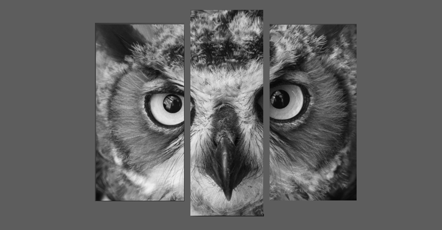

Совы — птицы, очень умные и глубокие птицы. Совы хищные птицы, как правило, они живут по одиночки, будучи хищными птицами, они охотятся на других меньших птиц, насекомых и маленьких животных. Совы — охотники, они — вечерние существа.


- Добычу они ощущают с помощью нитевидных перьев, расположенных на клюве и лапах, которые служат «сенсорами».
- Особенно хорошо совы видят на расстоянии и при слабой освещенности.
- Передние кромки крыла имеют жесткую кайму, которая сокращает шум, а задние – мягкую, которая помогает сокращать турбулентность.
- У сов много звуков. Знакомое всем «ухуканье» совы – признак заявления права на территорию, хотя не все виды могут издавать этот звук
- Совы обитают во всех регионах Земли, за исключением Антарктиды, Гренландии (большей части) и некоторых отдаленных островов
- Совы – дальнозоркие птицы, они не могут видеть четко в нескольких сантиметрах от их глаз.
- Совы могут слышать звуки частотой от 2 Гц (человек — в лучшем случае от 16).
-
Не все совы ночные животные. Некоторые из видов сов охотятся днем:
к примеру, малая сова (Athene noctua), снежная сова (Bubo scandiacus) и большая серая сова (Strix nebulosa). - Кисточки на голове у совы – не уши.
.png)
Самая маленькая сова – это воробьиный сыч.
Его размеры составляют всего 17-20 см, а вес 50-80 кг.
Самая крупная из совообразных – это филин. Его длина составляет 60-70 см, а вес от 2 до 4 кг.
В семействе совиных выделяют 3 подсемейства, 30 родов и 214 видов, самыми распространенными из которых являются:
- Ушастая сова
- Бородатая неясыть
- Филин
- Воробьиный сыч
- Домовый сыч
- Обыкновенная сипуха
- Белая сова
- Ястребиная сова
.png)
Совы принадлежат, наверное, к наиболее таинственным и загадочным птицам.
Скрытный ночной образ жизни, «умный» взгляд, бесшумный полет, пугающий голос поражали человеческое воображение.
Сов почитали, посвящали богам и героям, они стали символом мудрости.
Во многих сказках и легендах совы выступают советниками, проницательными птицами, вестниками, носителями необычных знаний.
Сове славяне приписывают роль хранительницы подземных богатств.
 В сове видели пособницу колдуний. Поэтому сов нередко распинали на стенах и дверях сеновалов, дабы отпугнуть дьявола. Этот обычай был распространен в Европе в средние века, а в Польше бытовал почти до середины XX века.